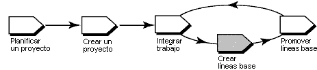

Visión general
En el diagrama siguiente se ilustra el flujo de trabajo para la gestión de proyectos de UCM. En esta guía de la
herramienta se tratan las áreas sombreadas.

En UCM de Rational ClearCase, una línea base es un objeto que, por lo general, representa una configuración estable de
un componente. Una línea base identifica actividades y una versión de cada elemento de un componente que actúa como una
versión de un componente.
A medida que los desarrolladores entregan trabajo a la corriente de datos de integración, los gestores de proyectos
crean nuevas líneas base para el área de trabajo compartida o de integración del proyecto, que incorpora los cambios. A
continuación, los desarrolladores pueden cambiar la base a las nuevas líneas base y estar al día con los cambios del
proyecto.
Esta guía de la herramienta se aplica al ejecutar Microsoft Windows.
Terminología
Tipos de líneas base
Una línea base incremental es una línea base que crea ClearCase registrando la última línea base
completa y las versiones que han cambiado desde la creación de la última línea base completa.
Una línea base completa es una línea base que crea ClearCase registrando todas las versiones que se
encuentran bajo el directorio raíz del componente. Por lo general, se tarda menos tiempo en crear una línea base
incremental. Sin embargo, ClearCase tarda menos tiempo en buscar el contenido de una línea base completa.
Para crear líneas base, siga los pasos que se indican a continuación:
Mientras está bloqueada, no se puede entregar ningún nuevo trabajo a la corriente de datos de integración, lo que
garantiza una configuración estable de la que crear la línea base.
-
Desde la barra de tareas de Windows, seleccione Inicio > Programas > Software Rational > Rational
ClearCase > Explorador de proyectos.
-
En el Explorador de proyectos, localice y seleccione la corriente de datos de integración del proyecto.
-
Pulse Archivo > Propiedades para visualizar la hoja de propiedades de la corriente de datos de
integración.
-
Pulse la pestaña Bloquear.
-
Pulse Bloqueada y, a continuación, pulse Aceptar.
-
En el Explorador de proyectos, localice y seleccione la corriente de datos de integración del proyecto.
-
Pulse Herramientas > Crear línea base. Se muestra el recuadro de diálogo Crear línea base.
La información descriptiva incluye el nombre de la línea base, el tipo de línea base que se va a crear, los componentes
para los que se va a crear una línea base y la información de corriente de datos y vista que se va a utilizar.
-
Entre el nombre en el recuadro Nombre de línea base. Por omisión, ClearCase denomina la línea base
añadiéndole la fecha al nombre del proyecto.
-
Seleccione incremental o completa como tipo de línea base que crear.
-
Seleccione un contexto de vista para la línea base especificando una de las vistas de integración del proyecto, una
vista unida a la corriente de datos de integración del proyecto.
-
Especifique los componentes para los que va a crear líneas base. ClearCase añade, automáticamente, un identificador
exclusivo a cada línea base como ayuda para diferenciar líneas base asociadas a componentes individuales.
 Para
obtener más información, consulte el tema referente al navegador del árbol de componentes de ClearCase de la
ayuda en línea de ClearCase. Para
obtener más información, consulte el tema referente al navegador del árbol de componentes de ClearCase de la
ayuda en línea de ClearCase.
-
En el Explorador de proyectos, localice y seleccione la corriente de datos de integración del proyecto.
-
Pulse Archivo > Propiedades para visualizar la hoja de propiedades de la corriente de datos de
integración.
-
Pulse la pestaña Bloquear.
-
Pulse Desbloqueada y, a continuación, pulse Aceptar.
Para
obtener más información, consulte los temas de la ayuda en línea de ClearCase que tratan sobre:
-
Acerca de las líneas base
-
Creación de una línea base
|